用户授权
1 用户授权业务流程
用户授权的业务流程如下：
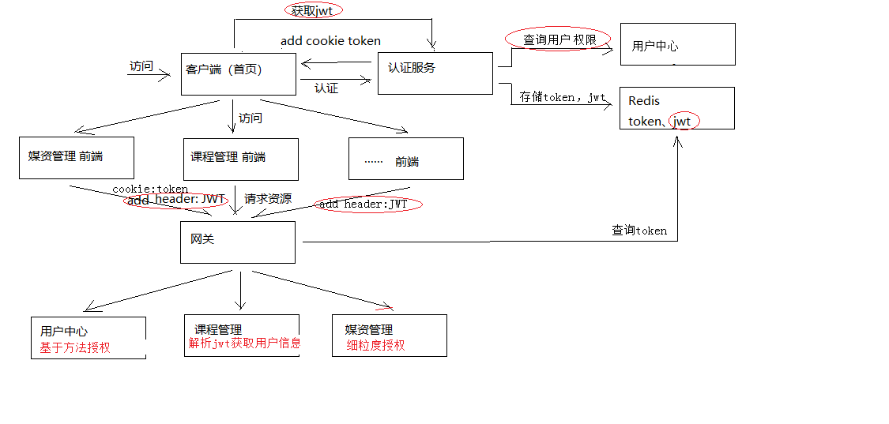
业务流程说明如下：
1、用户认证通过，认证服务向浏览器cookie写入token（ 身份令牌）
2、前端携带token请求用户中心服务获取jwt令牌
前端获取到jwt令牌解析，并存储在sessionStorage
3、前端携带cookie中的身份令牌及jwt令牌访问资源服务
前端请求资源服务需要携带两个token，一个是cookie中的身份令牌，一个是http header中的jwt
前端请求资源服务前在http header上添加jwt请求资源
4、网关校验token的合法性
用户请求必须携带身份令牌和jwt令牌
网关校验redis中user_token的有效期，已过期则要求用户重新登录
5、资源服务校验jwt的合法性并进行授权
资源服务校验jwt令牌，完成授权，拥有权限的方法正常执行，没有权限的方法将拒绝访问。
2 方法授权
2.1需求分析
方法授权要完成的是资源服务根据jwt令牌完成对方法的授权，具体流程如下：
1、生成Jwt令牌时在令牌中写入用户所拥有的权限
我们给每个权限起个名字，例如某个用户拥有如下权限：
course_find_list：课程查询
course_pic_list：课程图片查询
2、在资源服务方法上添加注解PreAuthorize，并指定此方法所需要的权限
例如下边是课程管理接口方法的授权配置，它就表示要执行这个方法需要拥有course_find_list权限。
1 | @PreAuthorize("hasAuthority('course_find_list')") |
3、当请求有权限的方法时正常访问
4、当请求没有权限的方法时则拒绝访问
2.2 jwt令牌包含权限
修改认证服务的UserDetailServiceImpl类，下边的代码中 permissionList列表中存放了用户的权限，
并且将权限标识按照中间使用逗号分隔的语法组成一个字符串，最终提供给Spring security。
1 | ...... |
重启认证服务工程，使用postman完成登录，从redis中找到jwt令牌。
使用jwt的测试程序查看 此令牌的内容。
1 | {"companyId":null,"userpic":null,"user_name":"mrt","scope":["app"],"name":"教学管理员","utype":"101002","id":"49","exp":1527202013,"authorities":["course_find_pic","course_get_baseinfo"],"jti":"9360fa85-c1b4-428a-80ec-b2e705a02827","client_id":"XcWebApp"} |
可以看到authorities属性中为用户的权限。
2.3 方法授权实现
2.3.1资源服务添加授权控制
1、要想在资源服务使用方法授权，首先在资源服务配置授权控制
1）添加spring-cloud-starter-oauth2依赖。
2）拷贝授权配置类ResourceServerConfig。
3）拷贝公钥。
2.3.2方法上添加注解
通常情况下，程序员编写在资源服务的controller方法时会使用注解指定此方法的权限标识。
1、查询课程列表方法
指定查询课程列表方法需要拥有course_find_list权限。
1 | @PreAuthorize("hasAuthority('course_find_list')") |
2、查看课程基本信息方法
指定查询课程基本信息方法需要拥有course_get_baseinfo权限。
1 | @PreAuthorize("hasAuthority('course_get_baseinfo')") |
3、在资源服务（这里是课程管理）的ResourceServerConfig类上添加注解，激活方法上添加授权注解
1 | //激活方法上的PreAuthorize注解 |
2.4 方法授权测试
重启课程管理服务，测试上边两个方法。
使用postman测试，测试前执行登录，并且将jwt令牌添加到header。
1）Get 请求 http://www.xuecheng.com/api/course/coursebase/get/4028e581617f945f01617f9dabc40000
用户拥有course_get_baseinfo权限，可以正常访问
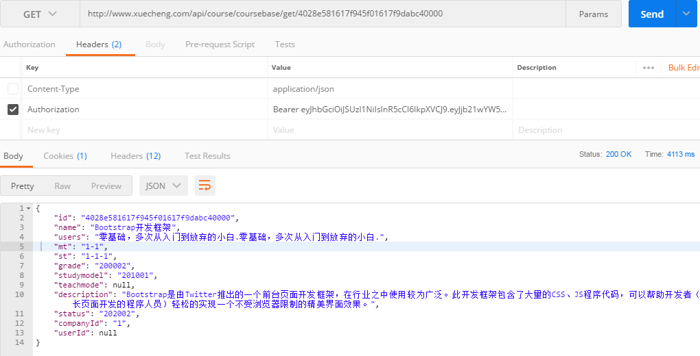
2) Get请求 http://www.xuecheng.com/api/course/coursebase/list/1/2
由于用户没有查询课程列表方法的权限，所以无法正常访问，其它方法可以正常访问。
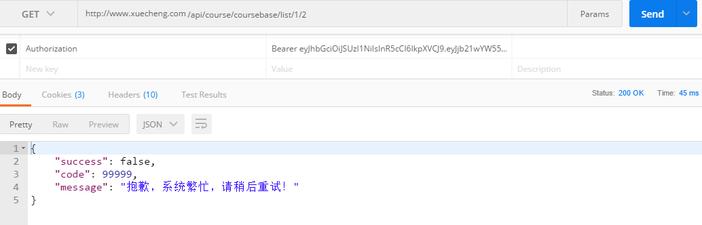
控制台报错：
org.springframework.security.access.AccessDeniedException: 不允许访问
说明：如果方法上没有添加授权注解spring security将不进行授权控制，只要jwt令牌合法则可以正常访问。
3）异常处理
上边当没有权限访问时资源服务应该返回下边的错误代码：
1 | UNAUTHORISE(false,10002,"权限不足，无权操作！") |
进入资源服务（这里是课程管理），添加异常类AccessDeniedException.class与错误代码 10002 的 对应关系
1 | @ControllerAdvice |
再次测试，结果如下：
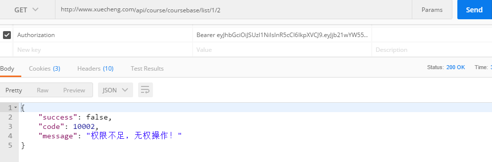
2.5 小结
方法授权步骤：
1、ResourceServerConfig类上添加注解，如下：
1 | //激活方法上的PreAuthorize注解 |
2、在方法添加授权注解
1 | @PreAuthorize("hasAuthority('???')") |
3、如果方法上不添加授权注解表示此方法不需要权限即可访问。
3 动态查询用户权限
3.1 需求分析
截至目前在测试授权时使用的权限数据是静态数据，正常情况的流程是：
1、管理员给用户分配权限，权限数据写到数据库中。
2、认证服务在进行用户认证时从数据库读取用户的权限数据（动态数据）
本节实现动态权限数据。
3.2 权限数据模型
3.2.1 数据模型结构
打开xc_user数据库，找到下边的表：
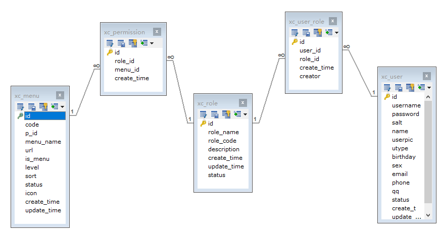
xc_user：用户表，存储了系统用户信息，用户类型包括：学生、老师、管理员等
xc_role：角色表，存储了系统的角色信息，学生、老师、教学管理员、系统管理员等。
xc_user_role：用户角色表，一个用户可拥有多个角色，一个角色可被多个用户所拥有
xc_menu:模块表，记录了菜单及菜单下的权限
xc_permission:角色权限表，一个角色可拥有多个权限，一个权限可被多个角色所拥有
3.2.2 数据模型的使用
本项目教学阶段不再实现权限定义及用户权限分配的功能，但是基于权限数据模型（5张数据表）及现有数据，要求学生在数据库中操作完成给用户分配权限、查询用户权限等需求。
1、查询用户所拥有的权限
步骤：
确定用户的id
查询用户所拥有的角色
查询用户所拥有的权限
例子：
1 | SELECT * FROM xc_menu WHERE id IN( |
2、给用户分配权限
1）向已拥有角色分配权限 步骤：
确定用户的id
确定权限的id
确定用户的角色
向角色权限表添加记录
2）添加角色给用户分配权限 步骤：
确定用户的id
确定权限的id
添加角色
向角色权限表添加记录
向用户角色关系表添加记录
3.3 用户中心查询用户权限
3.3.1 需求分析
认证服务请求用户中心查询用户信息，用户需要将用户基本信息和用户权限一同返回给认证服务。
本小节实现用户查询查询用户权限，并将用户权限信息添加到的用户信息中返回给认证服务。
以上需求需要修改如下接口：
1 | @GetMapping("/getuserext") |
3.3.2 DAO
在用户中心服务中编写dao，实现根据用户id查询权限。
1、定义XcMenuMapper.java
在com.xuecheng.ucenter.dao包下定义：
1 | @Mapper |
2、XcMenuMapper.xml
在com.xuecheng.ucenter.dao下定义XcMenuMapper.xml
1 | <?xml version="1.0" encoding="UTF-8" ?> |
其它Dao采用spring data 编写如下：
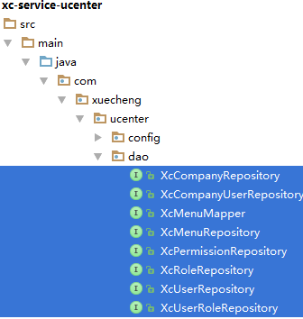
3.3.3 Service
修改UserService的getUserExt方法，查询用户权限。
1 | //根据账号查询用户的信息，返回用户扩展信息 |
3.4 认证服务查询用户权限
修改认证服务的UserDetailServiceImpl，查询用户的权限，并拼接权限串，将原来硬编码权限代码删除，代码如下：
1 | ...... |
3.5 测试
1、执行登录，在redis中查看jwt令牌，使用jwt测试程序解析jwt令牌中是否包括用户的权限 。
2、使用新的jwt令牌测试方法授权
3、给用户分配新权限，重新生成jwt令牌，测试授权
4 前端集成认证授权
4.1 需求分析
截至目前认证授权服务端的功能已基本完成，本章实现前端集成认证授权功能。
前端集成认证授权功能需要作如下工作：
1、前端页面校验用户的身份，如果用户没有登录则跳转到登录页面
2、前端请求资源服务需要在http header中添加jwt令牌，资源服务根据jwt令牌完成授权。
哪些功能需要前端请求时携带JWT？
用户登录成功请求资源服务都需要携带jwt令牌，因为资源服务已经实现了jwt认证，如果校验头部没有jwt则会认为身份不合法。
4.2教学管理中心
本节实现教学管理中心实现身份校验，其它前端参考教学管理中心实现。
4.2.1 配置虚拟主机
教学管理前端访问微服务统一在访问地址前添加/api前缀并经过网关转发到微服务。
配置teacher.xuecheng.com虚拟主机。
1 | #前端教学管理 |
4.2.2身份校验
教学管理中心是单页面应用，我们在路由变化时校验用户的身份，校验失败将跳转到登录页面。
校验方法如下：
1、如果成功从sessionStorage和cookie获取当前用户则继续访问
2、如果sessionStorage中无当前用户，cookie中有当前用户则请求服务端获取jwt，如果成功则继续访问。
3、以上两种情况都不满足则跳转到登录页面。
在main.js中添加路由监控代码，如下：
1 | router.beforeEach((to, from, next) => { |
2、在base/api/system.js中添加getjwt方法
1 | /*获取jwt令牌*/ |
3、在utils.js中添加 如下方法
1 | getActiveUser: function(){ |
4、测试
1）启动学习中心前端、教学管理前端、认证服务、用户中心服务、网关、Eureka
a、进入首页
b、点击“教学提供方”，此时由于没有登录自动跳转到登录页面
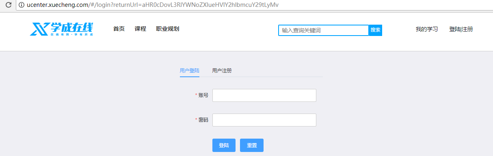
c、输入账号和密码登录
登录成功，跳转到教学管理页面
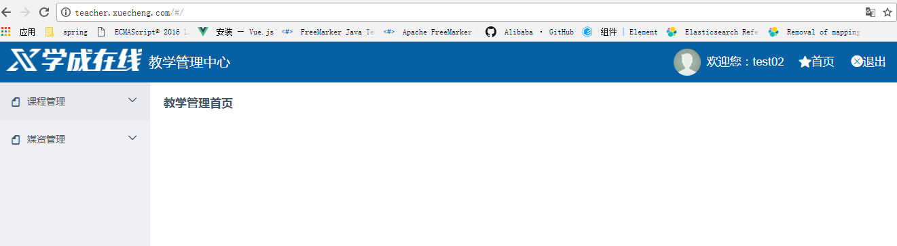
4.2.2 携带JWT授权
1、前端携带JWT请求
根据需求，在使用axios进行http请求前向header中加入jwt令牌
在main.js中添加
1 | import axios from 'axios' |
2、测试http请求是否携带jwt
进入教学管理中心，点击我的课程，观察request header中是否有Authorization信息
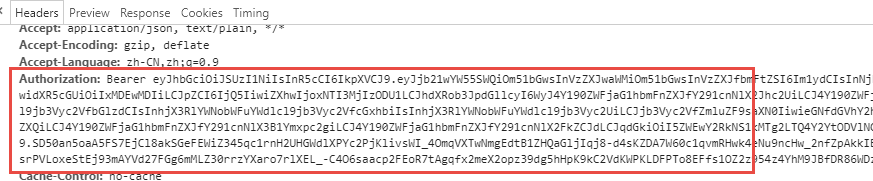
3、测试授权效果
当访问一个没有权限的方法时是否报错？
测试方法：
在课程计划查询方法上添加授权注解，表示当前用户需要拥有course_teachplan_list权限方可正常访问。
1 | @PreAuthorize("hasAuthority('course_teachplan_list')") |
进入我的课程，点击课程计划，观察响应结果为 10002错误。
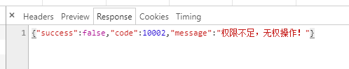
4、提示权限不足
当权限不足首页要给出提示，实现思路是使用axios的拦截，在执行后校验响应结果，如果是10002代码的错误则提示用户“权限不足”，如果是10001代码则强制登录。
在main.js中添加
1 | // 响应拦截 |
测试：
执行一个没有权限的操作，提示如下：
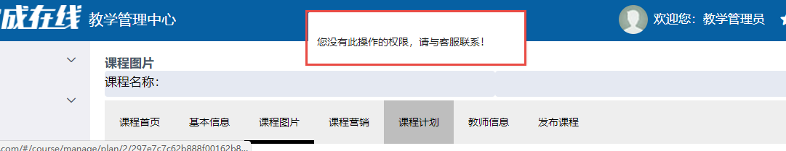
3 细粒度授权
3.1 需求分析
什么是细粒度授权？
细粒度授权也叫数据范围授权，即不同的用户所拥有的操作权限相同，但是能够操作的数据范围是不一样的。一个例子：用户A和用户B都是教学机构，他们都拥有“我的课程”权限，但是两个用户所查询到的数据是不一样的。
本项目有哪些细粒度授权？
比如：
我的课程，教学机构只允许查询本教学机构下的课程信息。
我的选课，学生只允许查询自己所选课。
如何实现细粒度授权？
细粒度授权涉及到不同的业务逻辑，通常在service层实现，根据不同的用户进行校验，根据不同的参数查询不同的数据或操作不同的数据。
3.3 我的课程细粒度授权
3.3.1 需求分析
1、我的课程查询，细粒度授权过程如下：
1）获取当前登录的用户Id
2）得到用户所属教育机构的Id
3）查询该教学机构下的课程信息
最终实现了用户只允许查询自己机构的课程信息。
2、修改课程管理服务“我的课程”的功能，根据公司Id查询课程，思路如下：
1）修改Dao，支持根据公司Id 查询课程。
2）修改Service，将公司Id传入Dao。
3）修改Controller，获取当前用户的公司Id，传给Service。
3、数据模型分析如下：
1）课程表
在xc_course数据库的course_base 表中添加company_id字段，来表示此课程的归属
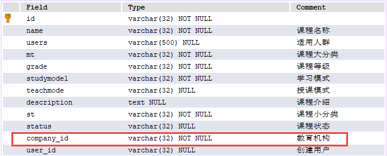
2）用户企业表
在xc_user数据库的xc_company_user表中记录了用户的归属公司信息
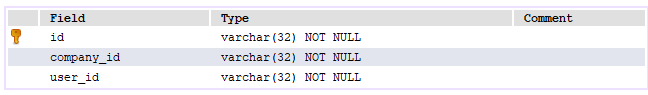
通过xc_company_user表可得到用户的所属公司Id。
如何查询某个用户的课程？
1、确定用户的Id
2、根据用户的Id查询用户归属的公司。
3、根据公司Id查询该公司下的课程信息
一个例子：
1 | /*确定用户的id：49*/ |
3.3.2 Api
定义我的课程查询接口如下：
1 | public QueryResponseResult<CourseInfo> findCourseList(int page, |
3.3.3 Dao
修改 CourseMapper.xml的查询课程列表，添加companyId条件。
1 | <select id="findCourseListPage" resultType="com.xuecheng.framework.domain.course.ext.CourseInfo" |
3.3.4 Service
修改CourseService的findCourseList方法，添加companyId参数，并且传给dao.
1 | public QueryResult<CourseInfo> findCourseList(String companyId,int page,int size,CourseListRequest courseListRequest) { |
3.3.5 Controller
修改CourseController的findCourseList，向service传入companyId
这里先使用静态数据测试使用。
1 | @Override |
3.3.5 测试
1、用户登录
由于使用了静态数据companyId为1，所以要使用企业编号为1的下边的用户去登录。
2、进入我的课程，查看数据是否正确。
观察所查询到的课程是该企业下的课程。
3.4 获取当前用户信息
3.4.1需求分析
要想实现只查询自己的课程信息则需要获取当前用户所属的企业id。
1、认证服务在用户认证通过将用户所属公司id等信息存储到jwt令牌中。
2、用户请求到达资源服务后，资源服务需要取出header中的jwt令牌，并解析出用户信息。
3.4.2 jwt令牌包括企业Id
资源服务在授权时需要用到用户所属企业ID，需要实现认证服务生成的JWT令牌中包括用户所属公司id信息。
查看认证服务UserDetailServiceImpl代码如下：
1 |
|
通过上边代码的分析得知，认证服务调用XcUserExt userext = userClient.getUserext(username);获取用户信息，将userext 中的信息存储到jwt令牌中，在userext 对象中已经包括了companyId公司ID等信息。
3.4.3获取当前用户
3.4.3.1 JWT解析工具类
1、在Oauth2Util工具类中，从header中取出JWT令牌，并解析JWT令牌的内容。
1 | public class Oauth2Util { |
2、在XcOauth2Util工具类中，将解析的JWT内容封装成UserJwt对象返回。
1 | public class XcOauth2Util { |
3.4.3.2 获取当前用户
修改课程管理的CourseController类，将companyId的静态数据改为动态获取：
1 | @Override |
3.4.4 测试
使用不同的用户登录系统，测试细粒度权限控制效果。
预期结果：每个用户只查询自己所拥有的课程。
4 微服务之间认证
4.1 需求分析
前边章节已经实现了用户携带身份令牌和JWT令牌访问微服务，微服务获取jwt并完成授权。
当微服务访问微服务，此时如果没有携带JWT则微服务会在授权时报错。
测试课程预览：
1、将课程管理服务和CMS全部添加授权配置
2、用户登录教学管理前端，进入课程发布界面，点击课程发布，观察课程管理服务端报错如下：
1 | feign.FeignException: status 401 reading CmsPageClient#save(CmsPage); content: |
分析原因：
由于课程管理访问CMS时没有携带JWT令牌导致。
解决方案：
微服务之间进行调用时需携带JWT。
4.2 Feign 拦截器
4.2.1 定义Feign拦截器
微服务之间使用feign进行远程调用，采用feign拦截器实现远程调用携带JWT。
在common工程添加依赖：
1 | <dependency> |
在Common工程定义拦截器如下：
1 | package com.xuecheng.framework.interceptor; |
4.2.2 使用Feign拦截器
本例子中课程管理调用cms需要携带jwt，所以需要在课程管理中定义Feign拦截器bean，在启动类中定义bean如下：
1 | @Bean |
4.2.3 测试
执行课程发布，提示发布成功。